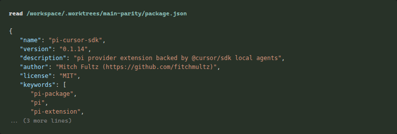
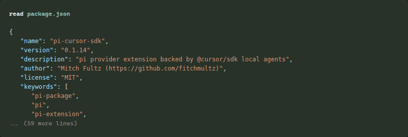
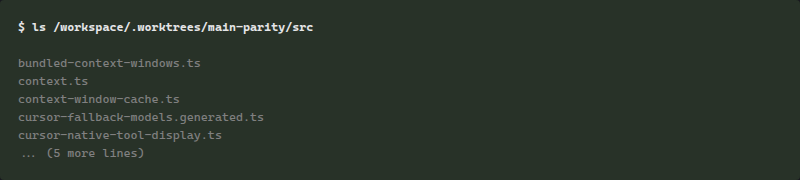
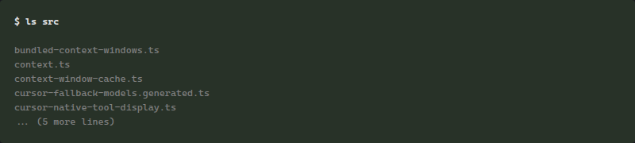
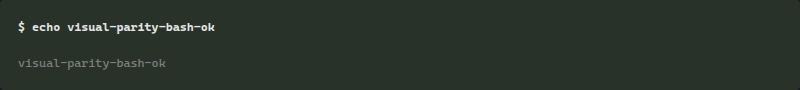
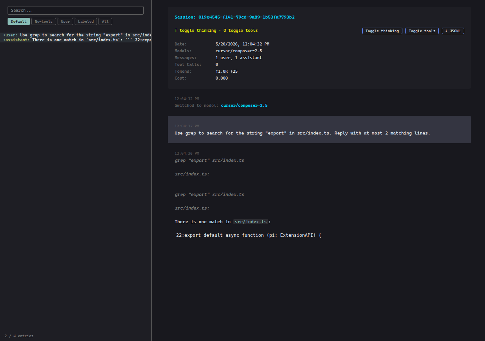
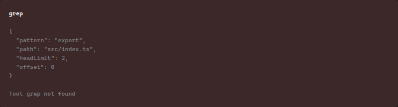
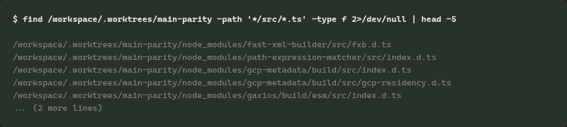
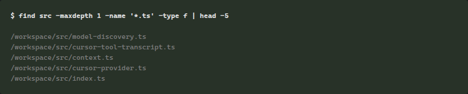

cursor/composer-2.5 native tool cards — before vs after
Captured from pi session HTML export (same renderer as the interactive TUI). Before = main extension code. After = this PR.
read
Before (main)
After (parity branch)
ls
Before (main)
After (parity branch)
bash
Before (main)
After (parity branch)
grep
Before (main)
After (parity branch)
find
Before (main)
After (parity branch)
write
Before (main)After (parity branch)
edit
Before (main)After (parity branch)